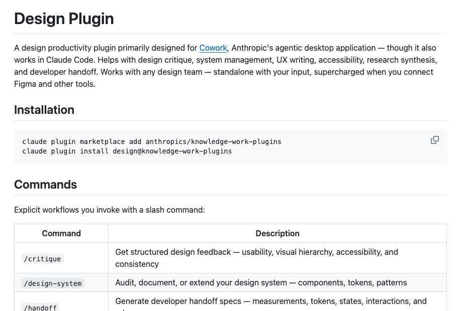

Nhóm thiết kế dành cho designer, UX writer, UX researcher và những ai phải giao thiết kế cho lập trình viên. Các kỹ năng trong nhóm giúp góp ý thiết kế, rà soát khả năng tiếp cận, viết nội dung giao diện, quản lý design system, tổng hợp nghiên cứu người dùng và soạn tài liệu bàn giao. Plugin design có 7 kỹ năng (chúng mình đếm thật trong kho gốc của Anthropic).
Theo README của plugin, mọi kỹ năng chạy được mà không cần nối công cụ nào. Các bạn mô tả thiết kế, dán ảnh chụp màn hình hoặc dán bản ghi phỏng vấn là đủ.

Cài đặt
Có hai cách, tùy các bạn dùng ứng dụng nào.
Cách 1: Claude Cowork
- NGƯỜI: vào claude.com/plugins, tìm plugin
designvà cài. - TỰ ĐỘNG: cài xong, plugin tự kích hoạt. Kỹ năng chạy khi các bạn nói đúng việc.
Cách 2: Claude Code
- NGƯỜI: mở cửa sổ dòng lệnh (terminal), chạy hai lệnh sau. Lệnh đầu thêm kho của Anthropic, lệnh sau cài plugin.
claude plugin marketplace add anthropics/knowledge-work-plugins claude plugin install design@knowledge-work-plugins
- TỰ ĐỘNG: cài xong, plugin tự kích hoạt trong các phiên làm việc sau đó.
- NGƯỜI: kiểm tra đã cài chưa bằng cách gõ
/plugintrong Claude Code, rồi xem thẻ Installed. - NGƯỜI (khi cần): tắt hoặc gỡ bằng
claude plugin disable design@knowledge-work-pluginshoặcclaude plugin uninstall design@knowledge-work-plugins.
Nối công cụ (không bắt buộc)
Nối thêm công cụ thì kỹ năng lấy được dữ liệu trực tiếp. Theo file CONNECTORS.md của plugin, các nhóm công cụ gồm:
- Chat: Slack (hoặc Microsoft Teams).
- Công cụ thiết kế: Figma (hoặc Sketch, Adobe XD, Framer).
- Kho kiến thức: Notion (hoặc Confluence, Guru, Coda).
- Quản lý công việc: Linear, Asana, Atlassian (Jira/Confluence), hoặc Shortcut, ClickUp.
- Phản hồi người dùng: Intercom (hoặc Productboard, Canny, UserVoice, Dovetail).
- Phân tích sản phẩm: Amplitude, Mixpanel, Heap, FullStory.
Cách gọi kỹ năng
Có hai cách.
- Nói việc bằng lời thường. Các bạn nhắn việc cần làm, kỹ năng tự chạy khi đúng việc. Ví dụ: "Xem giúp mình màn hình đăng ký này có ổn không".
- Gọi thẳng bằng lệnh gõ tắt
/design:<tên-kỹ-năng>. Ví dụ:/design:design-critique /design:accessibility-review /design:ux-copy
Các kỹ năng có gợi ý nội dung đi kèm. Ví dụ design-critique nhận link Figma, ảnh chụp màn hình hoặc mô tả; design-system nhận một trong ba chế độ audit, document, extend kèm tên thành phần. README của plugin cũng có ví dụ gõ thêm nội dung ngay sau lệnh, chẳng hạn /design-system audit hoặc /ux-copy error messages for payment flow.
Các kỹ năng trong nhóm
/design:design-critique: cho góp ý có cấu trúc về khả năng dùng, thứ bậc thị giác và độ nhất quán, ở bất kỳ giai đoạn nào từ phác thảo đến hoàn thiện. Câu gọi mẫu: "Nhận xét giúp mình mockup trang thanh toán này, mình gửi ảnh chụp màn hình."/design:accessibility-review: rà soát thiết kế hoặc trang web theo chuẩn WCAG 2.1 AA: tương phản màu, điều hướng bàn phím, kích thước vùng chạm, trình đọc màn hình. Câu gọi mẫu: "Kiểm tra giúp mình màn hình này có đạt chuẩn tiếp cận không trước khi bàn giao."/design:design-handoff: tạo tài liệu bàn giao cho lập trình viên: bố cục, design token, thuộc tính thành phần, trạng thái tương tác, điểm ngắt responsive, trường hợp biên và chi tiết hiệu ứng chuyển động. Câu gọi mẫu: "Soạn giúp mình tài liệu bàn giao cho thiết kế này, link Figma ở dưới."/design:design-system: kiểm tra, viết tài liệu hoặc mở rộng design system: tìm chỗ đặt tên không nhất quán, giá trị gõ cứng, viết tài liệu biến thể và trạng thái của thành phần, thiết kế mẫu mới khớp hệ thống hiện có. Câu gọi mẫu: "Rà giúp mình thư viện component này xem chỗ nào đặt tên chưa thống nhất."/design:ux-copy: viết hoặc rà nội dung giao diện: microcopy, thông báo lỗi, màn hình trống, nút kêu gọi hành động, hộp thoại xác nhận, nội dung onboarding. Câu gọi mẫu: "Nút xác nhận chuyển khoản này nên ghi gì? Cho mình vài phương án."/design:user-research: lập kế hoạch, thực hiện và tổng hợp nghiên cứu người dùng: kế hoạch nghiên cứu, hướng dẫn phỏng vấn, kiểm thử khả năng dùng, thiết kế khảo sát, câu hỏi nghiên cứu. Câu gọi mẫu: "Soạn giúp mình bộ câu hỏi phỏng vấn người dùng về tính năng lưu danh sách yêu thích."/design:research-synthesis: tổng hợp dữ liệu nghiên cứu (bản ghi phỏng vấn, kết quả khảo sát, ghi chú kiểm thử, phiếu hỗ trợ, phản hồi NPS) thành chủ đề, nhóm người dùng, insight và việc nên làm tiếp theo theo thứ tự ưu tiên. Câu gọi mẫu: "Đây là mười bản ghi phỏng vấn, tổng hợp giúp mình các chủ đề chính và việc nên làm trước."
Lưu ý khi dùng ở Việt Nam
- Phần lớn kỹ năng chạy tốt khi các bạn nhắn bằng tiếng Việt, nhưng tên kỹ năng và lệnh vẫn gõ bằng tiếng Anh. Đây là nhận xét của chúng mình, chưa kiểm cho từng kỹ năng.
- Với
ux-copy, các bạn nên nêu rõ giọng thương hiệu, cách xưng hô (bạn, quý khách, anh/chị) và độ dài tối đa của nút. Đây là gợi ý của chúng mình, vì chuẩn xưng hô tiếng Việt khác nhiều so với tiếng Anh. - Chuẩn kiểm tra của
accessibility-reviewlà WCAG 2.1 AA. Nếu sản phẩm của các bạn có yêu cầu tiếp cận riêng theo quy định hoặc theo khách hàng, hãy đối chiếu thêm. - Công cụ nối sẵn trong CONNECTORS.md (Figma, Notion, Slack, Linear, Jira…) khá sát với công cụ nhiều đội đang dùng. Chưa có tài khoản thì cứ chạy chế độ không nối công cụ.
Chúng mình chưa cài thử nhóm này; lệnh và tên kỹ năng lấy từ kho gốc của Anthropic.
Xem các nghề khác: Kỹ năng AI theo từng nghề.
Các bạn muốn có bộ kỹ năng riêng cho nghề của mình?
Follow chúng mình trên Threads và inbox, hoặc để lại số Zalo, chúng mình nhắn lại tư vấn.
Cập nhật 03/11/2026.